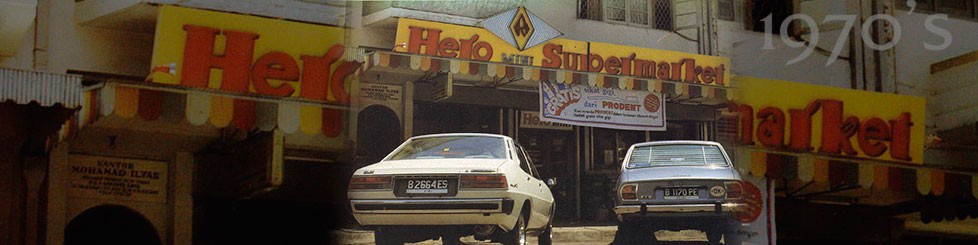

My Hero
Sebagai cikal bakal Perseroan, Hero Supermarket memiliki filosofi bisnis untuk menjadi toko ritel modern terpercaya yang menawarkan beragam produk premium untuk pasar di Indonesia. Perseroan berupaya untuk meraih visi ini dengan terus memperkuat pengalaman berbelanja yang elegan bagi pelanggan dan menyediakan berbagai produk pilihan kebutuhan rumah tangga sehari-hari, khususnya makanan dan minuman serta produk segar yang diperoleh dari produsen dalam dan luar negeri dengan kualitas terbaik.
Kunvci sukses Perseroan dalam menyediakan produk segar masih terus dijaga dengan baik hingga saat ini. Didukung dengan eksistensi HERO Group selama lebih dari empat dekade di industri ritel modern dan dalam menciptakan inovasi untuk mengikuti tren berbelanja konsumen, kehadiran dan keandalan Hero Supermarket telah begitu melekat di kalangan masyarakat Indonesia. Selain itu, produk siap saji juga terus dikembangkan untuk memenuhi gaya hidup konsumen.

Kesuksesan Hero dimulai dengan kehidupan M.S. Kurnia yang tinggal di lingkungan miskin di Jakarta. Kurnia adalah seorang gadis muda yang tidak punya waktu untuk menghabiskan waktu bersama teman-temannya dan harus membantu keluarganya keluar dari kemiskinan. Pada tahun 1954, Kurnia dan kakaknya Wu Guo Chang memulai usaha bernama CV. Pahlawan. Pada tahun 1959, Wu Guo Chang memutuskan untuk memulai bisnisnya, namun Kurnia optimis dengan masa depan bisnisnya di bidang makanan dan jasa.
Pada tahun 1970-an, Kurnia dan Nurhajati pergi ke Singapura untuk melakukan survei supermarket dan menemukan beberapa supermarket modern. Mereka membangun supermarket modern dan mulai menjual makanan kepada penduduk setempat. Pada tahun 1971, Hero Mini Supermarket dibuka, dan pada tahun 1970-an, supermarket tersebut berkembang pesat. Kurnia menyadari bahwa waktu yang mereka miliki tidak cukup untuk menghasilkan keuntungan, sehingga ia berinovasi dan membangun counter makanan khusus untuk membantu karyawannya bekerja lebih efisien.
Pada tahun 1970-an, supermarket dikritik karena kurangnya inovasi dan kurangnya layanan pelanggan. Kurnia dan Nurhajati bekerja sama untuk mewujudkan Hero Supermarket yang sukses mencapai target yang diinginkan. Kesuksesan Hero disebabkan oleh pengiriman yang tepat waktu, harga yang kompetitif, dan hubungan yang kuat dengan mitranya. Pada tahun 1980, kesuksesan perusahaan dirayakan dengan dibukanya Hero Supermarket baru di Jakarta, yang menandai pencapaian signifikan bagi perusahaan.